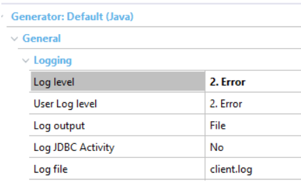

Learn more in SAC 41179.
In summary, an error 403 occurs when working on a web application, a server receives the value of a Variable/Attribute with a value that is different from the value that the server had sent. The value should not have been changed, as it is a read-only Variable/Attribute.
The objective is to avoid vulnerabilities if someone intervenes and changes values in the POST that are not supposed to be modified.
The message that appears in the browser may vary according to whether you are working with Java or .NET, and depending on the type of object (Transaction object, Web Panel object, etc.):
An error occurred while accessing the application server. (403)
HTTP status 403 – Forbidden
403 Forbidden
The error may return after an attack (it worked) or there may be a programming/configuration error that causes it.
To determine the specific case, the log must be enabled.
You can enable the log by configuring the Log level property (at the generator level) with value “2. Error.”

Depending on the log level selected, it will include more or less information:
- ERROR - The log will only include the object with the error, the variables/attributes that were modified but should not be modified, and their new value(s) (received by the server of the client).
- INFO - In addition to the above information, the values that were originally sent to the client are included.
- DEBUG - In addition to the above, more information about the program execution context is included (example: encrypted values, session ID), the stack trace in Java. In complex cases, this information can be useful.
Note: To change the log level at runtime (outside the GeneXus IDE), you can change the logging configuration. For more information, go to the Log level property article.
What is the most appropriate level?
The DEBUG level contains the most information, but the log can be too large and confusing to process. Also, it can affect the application's performance, etc.
In this context, usually the ERROR or INFO level are enough to identify the problem.
Therefore, as a general recommendation –at least in production– you can leave the log with the ERROR level as it is the least costly to generate and process, or even the INFO level.
How are log files processed?
In the log file, look for the string "403" or directly for the error “SecurityCheckFailed.”
All log levels include a line similar to the following:
JAVA
2020-03-10T11:28:01.557-03:00 [http-nio-8080-exec-10] ERROR com.genexus.CommonUtil - customer:[ SecurityCheckFailed (403 Forbidden) value for] "hshsalt":"hshCustomer","CustomerName":"Harry"}
.NET
2020-03-10 12:19:05,698 [19] ERROR GeneXus.Utils.GXUtil - At file: , line: 0, customer:[ SecurityCheckFailed (403 Forbidden) value for]{"hshsalt":"hshCustomer","CustomerName":"Harry"}
where "Customer" is the object that failed and "CustomerName" is the name of the attribute/variable whose value was changed to "Harry."
That is, the value that was sent from the server for CustomerName is different from the one that came from the client; the latter is "Harry."
With that information, in some cases the problem can be identified.
If this is not enough, the log level must be increased to INFO, and then this is displayed:
JAVA
2020-03-10T12:04:12.836-03:00 [http-nio-8080-exec-48] INFO com.genexus.CommonUtil - customer:[ SendSecurityCheck value for]{"hshsalt":"hshCustomer","CustomerName":"Oliver"}
2020-03-10T12:04:22.305-03:00 [http-nio-8080-exec-49] ERROR com.genexus.CommonUtil - customer:[ SecurityCheckFailed (403 Forbidden) value for]{"hshsalt":"hshCustomer","CustomerName":"Harry"}
.NET
2020-03-10 12:20:58,009 [7] INFO GeneXus.Utils.GXUtil - At file: , line: 0, customer:[ SendSecurityCheck value for]{"hshsalt":"hshCustomer","CustomerName":"Oliver"}
2020-03-10 12:21:03,769 [11] ERROR GeneXus.Utils.GXUtil - At file: , line: 0, customer:[ SecurityCheckFailed (403 Forbidden) value for]{"hshsalt":"hshCustomer","CustomerName":"Harry"}
That is, in the "Customer" object the value "Oliver" was sent for the "CustomerName" attribute, and the value "Harry" was returned to the server, even though CustomerName cannot be modified.
Thus you have the value that was sent to the client and the returned one; using that information it may be possible to identify the problem.
If it is not possible to identify the problem with this information, you can enable the DEBUG level which includes, in addition to the above, more context information.
It is something similar to the following:
JAVA
2020-03-10T12:11:42.906-03:00 [http-nio-8080-exec-5] INFO com.genexus.CommonUtil - customer:[ SendSecurityCheck value for]{"hshsalt":"hshCustomer","CustomerName":"Oliver"}
2020-03-10T12:11:48.028-03:00 [http-nio-8080-exec-6] ERROR com.genexus.CommonUtil - customer:[ SecurityCheckFailed (403 Forbidden) value for]{"hshsalt":"hshCustomer","CustomerName":"Harry"}
2020-03-10T12:11:48.030-03:00 [http-nio-8080-exec-6] DEBUG com.genexus.CommonUtil - send_http_error_code 403
java.lang.Throwable: null
at com.genexus.CommonUtil.writeLog(CommonUtil.java:242) [gxcommon.jar:?]
at com.genexus.GXutil.writeLog(GXutil.java:53) [gxclassR.jar:?]
at com.error403.customer_impl.standaloneStartupServer(customer_impl.java:662) [classes/:?]
at com.error403.customer_impl.standaloneStartup(customer_impl.java:523) [classes/:?]
at com.error403.customer_impl.userMain(customer_impl.java:509) [classes/:?]
at com.error403.customer_impl.userMainFullajax(customer_impl.java:516) [classes/:?]
at sun.reflect.NativeMethodAccessorImpl.invoke0(Native Method) [?:1.8.0_181]
....
.NET
2020-03-10 13:03:57,148 [20] INFO GeneXus.Utils.GXUtil - At file: d:\AppPath\customer.cs, line: 1856, customer:[ SendSecurityCheck value for]{"hshsalt":"hshCustomer","CustomerName":"Oliver"}
....
2020-03-10 13:04:01,593 [5] ERROR GeneXus.Utils.GXUtil - At file: d:\AppPath\customer.cs, line: 692, customer:[ SecurityCheckFailed (403 Forbidden) value for]{"hshsalt":"hshCustomer","CustomerName":"Harry"}
TIP for .NET: For the source line number (CS) to be displayed, it must have been compiled with debug and the PDB files must exist in the installation where you are running the DLLs. With any log level available, the line number that may be useful is displayed. In Java, the DEBUG level is enough and it can be seen in the stack trace.
Solutions
The cause must be determined before a possible solution can be found. These debugging actions help determine them.
SAC 41179 contains some possible scenarios, as well as the following article: Security Web Development tips.
Availability
Although this feature has been offered for several GeneXus versions (GeneXus X Evolution 3, GeneXus 15, GeneXus 16), this article describes the GeneXus 16 upgrade 9 values, behaviors, and recommendations.
|